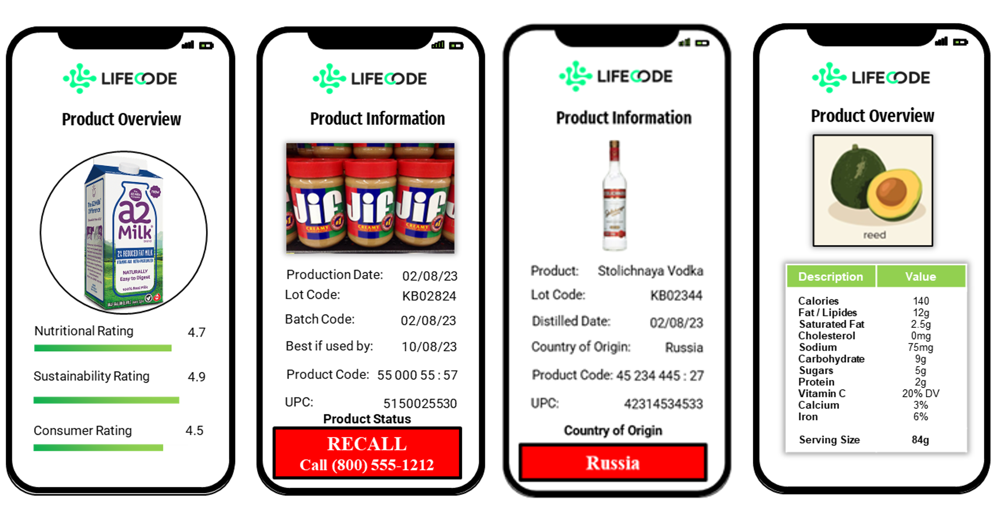

Home
Addressing the Bristol Farms Transparency Challenge¶
In this project, Team XYZ looked at various aspects of this transparency challenge for Bristol farms to propose possible solutions for it.
Watch the video summary of our presentation below for more details.
Life code in action¶

Life Code covers an evolving array of information that brings transparency to the consumer. The objective of Life Code is to be a single-solution that meets the needs of retailers, distribution channel partners, farmers, manufacturers, retailers and consumers.